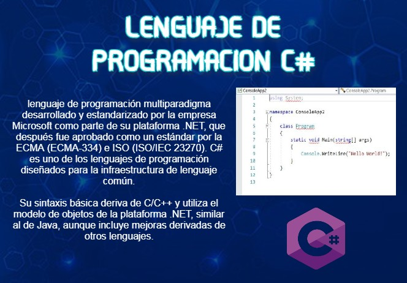

HAZ PARTE DE LA FAMILIA UNADISTA
¿PORQUE ESTUDIAR EN LA UNAD?
Si quieres saber la respuesta a la anterior pregunta escucha el siguiente audio
EXPLICACION DE OFERTA ACADEMICA
CONTENIDO TECNOLOGICO

Si quieres saber la respuesta a la anterior pregunta escucha el siguiente audio